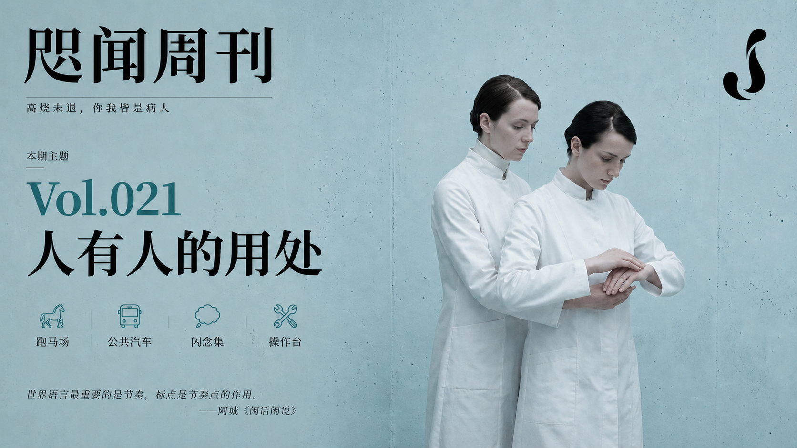
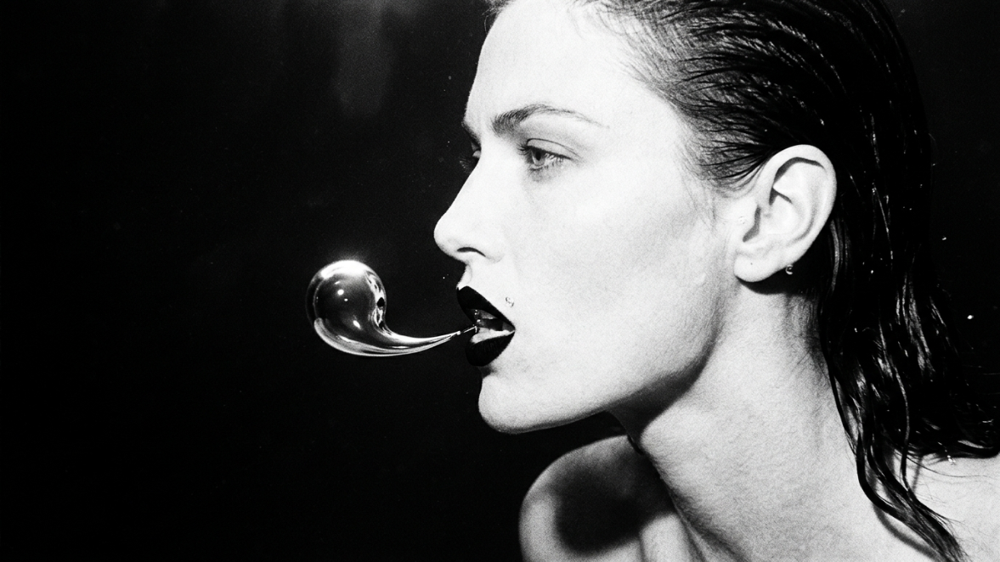
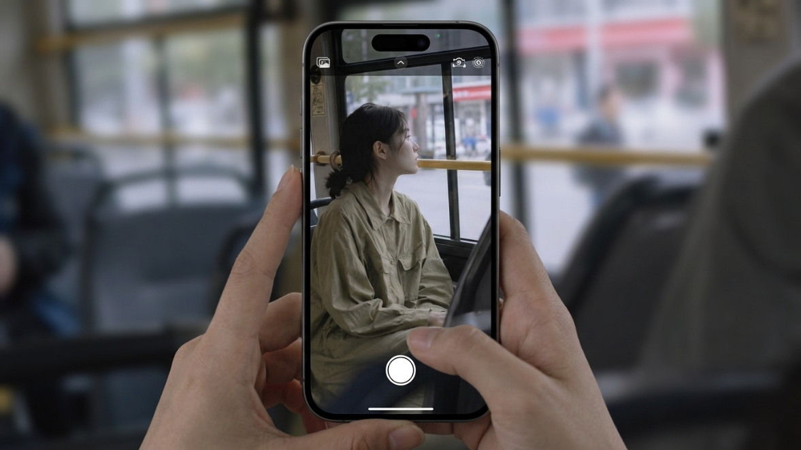
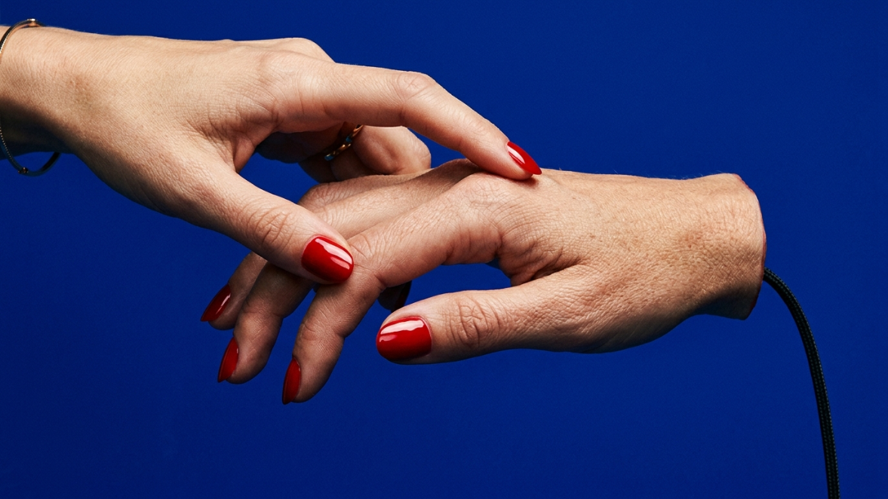
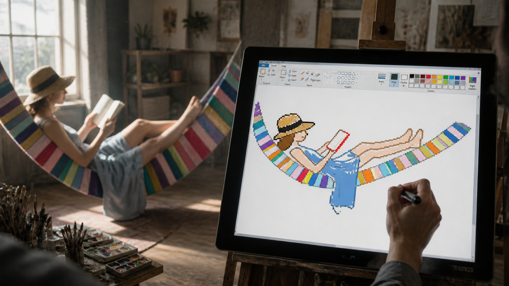
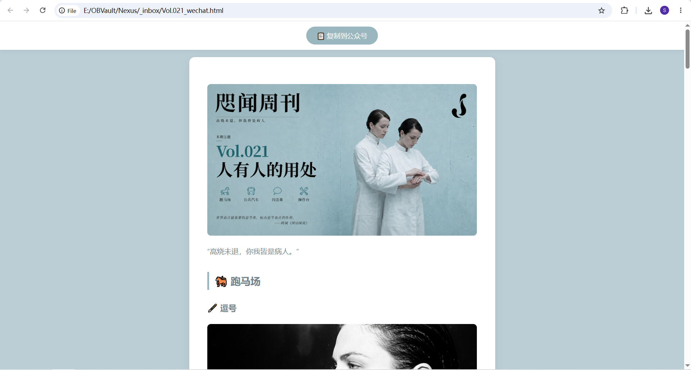
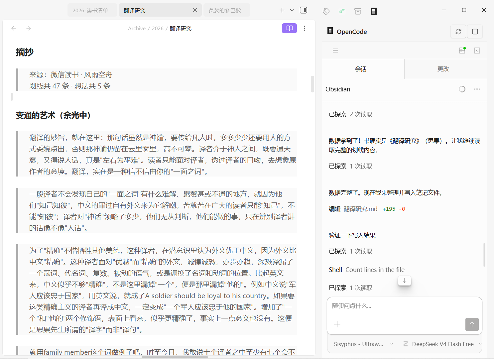

"We're all burning up, every one of us a patient."
🐎 The Paddock
🖋️ Commas

I firmly believe that creators have the right to use punctuation freely according to their personal needs. The presence or absence of a comma alters the reading rhythm of a sentence, and the author is entirely entitled to make that call. Whether to use a comma depends on the cadence of the surrounding prose, the author's habitual style, the effect they wish to achieve, or even intangible factors like the weather and astrological alignments. The final decision-maker should not be a copy editor trained in English composition wielding a red pencil.
—— Lawrence Block, Telling Lies for Fun & Profit
The comma is a grammatical symbol, but I use it as an instrument for breathing. The reader must never awaken from the hypnosis.
—— Gabriel García Márquez: The Last Interview
The most important aspect of global languages is rhythm. Our study of Western long sentences has led many people to lose the sense of where and how to pause. I adopt a blunt approach: punctuation marks serve not merely grammatical functions, but act as rhythmic beats.
—— A Cheng, Idle Talk on Idle Talk
Only true connoisseurs notice this. I might add: in English, commas are used for grammar; in Chinese, commas are used for breath and flow.
—— Yu Guangzhong, The Art of Adaptation
About twenty years ago, I hadn't written in Chinese for a long time, having been reading English and writing a bit of English. After coming to Hong Kong, I compiled my old works into a collection of essays. My friend Song Tifen read it and remarked, "Your sentences are too long." He was absolutely right. I found that I used too few commas, which made me realize one of the biggest differences between Chinese and English punctuation: English uses fewer commas than Chinese. Therefore, when translating English into Chinese, one must add a few commas.
—— Si Guo, Studies in Translation
🚌 The Omnibus

In Dean Murphy's interview, she says: "I cannot imagine a poet not striving for leisure and tranquility. Unfortunately, poetry is not born in noise and crowds, nor is it born on a bus. So, there must be four walls and a guarantee that the phone won't ring. That is everything writing requires."
— Wisława Szymborska, Poems: New and Collected
The girl sitting in front of me on the bus tied her hair with a simple black string. She wore slightly oversized workwear dresses, without any jewelry or makeup, not even pierced ears. The profile of her face was a fleeting inspiration of nature, impossible to replicate; faint blue veins showed beneath her nearly translucent skin. When she looked out the window, it was as if she were seeing the world for the first time, making one wonder where she had just arrived from. This image was both maximally simplified and immensely rich. I knew nothing about her, yet I felt as if I were sitting in a cathedral.
—— Jia Xingjia, Scribbles
For a long time, during my youth, early adolescence, and young adulthood, whenever I took the bus—provided it wasn't too crowded—I loved sitting in the very back row by the window. Perhaps a psychoanalysis could be applied here: "In my youth, my self-awareness was of that superfluous person outside the frame," or "I was afraid of being observed if there happened to be another observer." In other words, I was terrified of being exposed in a crowd, wishing only to retreat into a shadow folded against the wall.
—— Luo Yijun, Fat and Thin Co-Writing
💭 The Flash Collection

I was thinking at the time, do performance artists have dress rehearsals?
Vertical mice: Reshaping your mouse hand.
We're all burning up, every one of us a patient.
Concluding that AI is "ultimately" incapable of a task after trying it once and getting garbage results... How could the experience accumulated by such a person ever be valuable?
🛠️ The Workbench
🎨 The Scribble Drawing Prompt

Riding the wave of GPT-Image-2, this prompt was quite popular a while ago. It converts images into a style resembling a mouse drawing in MS Paint.
Redraw this image in the clumsiest, messiest, most pathetic way possible. Use a white background and make it look like it was drawn with a mouse in MS Paint. It should be vaguely similar, but not really. Kind of accurate, but inexplicably off, carrying that low-quality, pixel-by-pixel excruciating feel, truly emphasizing just how absurdly terrible it is. You know what, whatever, just draw it however you want.
I expanded on it slightly, turning an existing artwork into a "live sketching" scene, but drawn terribly.
**Scene Description**: A cinematic, hyper-realistic art studio. Soft Nordic light filters through the window, with tiny dust motes floating in the air. In the background, an incredibly professional model is fully absorbed in posing according to a reference image, perfectly capturing the original's attire, makeup, and demeanor.
**Subject Focus**: Using an over-the-shoulder shot, the focus is squarely on a digital drawing tablet on an easel in the foreground. The artist's hand is gripping a stylus, creating art, but what appears on the canvas is utterly absurd: **[Redraw this image in the clumsiest, messiest, most pathetic way possible. Use a white background and make it look like it was drawn with a mouse in MS Paint. It should be vaguely similar, but not really. Kind of accurate, but inexplicably off, carrying that low-quality, pixel-by-pixel excruciating feel, truly emphasizing just how absurdly terrible it is. You know what, whatever, just draw it however you want.]**
**Visual Style**: A violent visual clash between the photorealistic environment and the extremely cheap MS Paint pixel aesthetic. The studio details are in 8K resolution, and the background model has a delicate shallow depth of field (Bokeh), while the doodle on the canvas is sharp, crude, and jagged. This contrast between "hall-of-fame execution" and "disaster-level creation" produces a surreal sense of humor. --ar 16:9
📱 WeChat Official Account Typesetting (Continued)

The initial version (see Vol.020 The Dictionary Typesetting Eats Garbage) relied on rather rough prompts for a conversational AI.
- To process images, I had to publish the blog first (using it essentially as an image host), and then reference the images via links.
- To paste it into the WeChat editor, I also had to preview the HTML, select all, and copy.
So, I used an Agent to rewrite it into a Skill—Skill - wechat-formatter. The workflow looks roughly like this:
- Read the source file.
- Extract the color palette from the cover image.
- Parse the Markdown.
- Embed images using base64.
- Generate HTML (including CSS).
- Output to the
_inbox/folder. - Open in the browser.
I wasn't sure exactly how to implement any of these steps. I merely stated the requirements, had the Agent search for solutions first, and then let it modify the code.
For example, the current copying method involves adding a "One-Click Copy" button at the top of the generated HTML page. The current color scheme is derived by analyzing the article's header image. I don't know the underlying principles of how this works, nor do I want to.
It feels a bit strange, but it's not unacceptable.
Currently, there's a complete set of article post-processing Skills:
First is Skill - rename-linked-images, used for handling image attachments. It batch-renames images referenced in notes and synchronously updates the links across other notes. It can also convert image reference formats between Wiki links and standard Markdown links, since my notes use Wiki links, but Hexo requires standard Markdown. I previously wrote an Obsidian plugin for this, but the results weren't good enough.
Next is Skill - hexo-publisher to publish the blog. This skill is simple, just a format conversion—applying Hexo's YAML, assigning it to existing categories, adding existing tags, then copying the note and attachments to the blog folder, and finally running the Hexo command in that directory.
Lastly, there's the aforementioned Skill - wechat-formatter, which simply typesets the WeChat article for one-click pasting into the editor.
Additionally, I noticed that when using models like DeepSeek V4 Flash via OpenCode, all Chinese quotation marks are unconsciously changed to English ones. So a patch was needed: the Skill must emphasize the use of right-angle quotation marks during output, and execute a replacement operation after processing.
📚 WeChat Reading Skill
News flash: WeChat Reading has also launched Skills, making it much easier to organize reading notes in Obsidian.
Also, the plugin used in the screenshot is opencode-obsidian, though any other Agent would work too.
